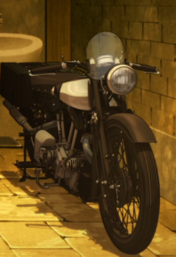

Soma Saito is a Japanese voice actor and singer. He is affiliated 81 Produce. He voiced Hermes in Kino's Journey: The Beautiful World - The Animated Series, and Corteo in 91 Days.
- Gender: Male
- Birthday: April 22, 1991
- Hometown: Yamanashi, Japan

|

|

|
|---|
| |
Soma Saito is a Japanese voice actor and singer. He is affiliated 81 Produce. He voiced Hermes in Kino's Journey: The Beautiful World - The Animated Series, and Corteo in 91 Days.
|
|---|
|  | Hermes | Kino's Journey: The Beautiful World - The Animated Series | Hermes is a Brough Superior motorrad who travels around with Kino. He provides the speed for him and Kino to travel anywhere they please. Hermes is naive, innocent and acts childish, but he is quite reliable and a good companion. |